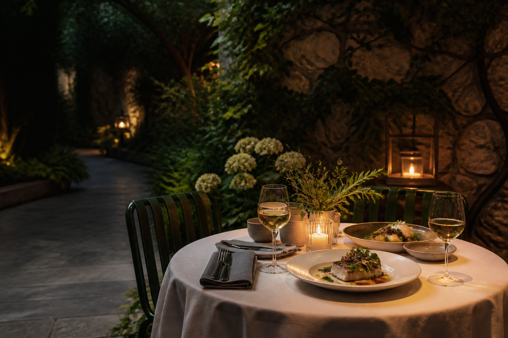

Restaurant · Lyon 1er
Le Jardin
Une cuisine française de saison,
libre, vivante et généreuse.
La maison
Simplement bon.
Naturellement.
Au Jardin, nous cuisinons au rythme des saisons, avec l’envie de faire peu, mais de le faire juste.
Nos produits viennent de fermes et d’artisans voisins. Dans l’assiette, une cuisine française libre et généreuse ; en salle, le plaisir de recevoir comme à la maison.
Découvrir notre cuisineLocalDes producteurs choisis
dans notre région
dans notre région
VivantUne carte courte qui change
avec les arrivages
avec les arrivages
SincèreDes assiettes lisibles,
sans artifices
sans artifices
L’atmosphère
Un jardin
en ville
Une parenthèse végétale à quelques pas des quais, pensée pour les déjeuners qui s’attardent et les dîners à la lueur des bougies.
Votre table vous attend
Et si on se retrouvait
au Jardin ?
Pour un déjeuner, un dîner ou une occasion particulière, notre équipe sera heureuse de vous recevoir.
Réserver par téléphone ou appelez-nous au 04 78 27 40 18Nous trouver
Les portes
sont ouvertes
Horaires
- Lundi
- Fermé
- Mar — Ven
- 12h — 14h
19h — 22h - Samedi
- 19h — 22h30
- Dimanche
- Fermé